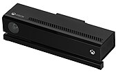
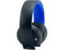
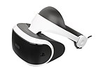
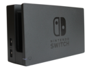

Los consumidores a menudo pueden comprar una gama de accesorios para consolas fuera de las categorías anteriores. Estos pueden incluir:Camara de videoSi bien se pueden usar con consolas conectadas a Internet, como cámaras web, para comunicarse con otros amigos, como se usaría en computadoras personales, las aplicaciones de cámara de video en las consolas se usan más comúnmente en juegos de detección de movimiento y realidad aumentada/realidad mixta. Dispositivos como EyeToy para consolas PlayStation y Kinect para consolas Xbox fueron puntos centrales para una gama de juegos compatibles con estos dispositivos en sus respectivos sistemas.Auriculares estándarLos auriculares proporcionan una combinación de auriculares y un micrófono para chatear con otros jugadores sin molestar a los que están cerca en la misma habitación.Cascos de realidad virtualAlgunos cascos de realidad virtual (VR) pueden funcionar independientemente de las consolas o usar computadoras personales para su sistema de procesamiento principal. A partir de 2020, el único soporte directo de VR en consolas es PlayStation VR, aunque los otros fabricantes planean soporte para VR en otras consolas.Estación de acoplamientoPara sistemas portátiles e híbridos como Nintendo Switch, la estación de acoplamiento facilita la inserción de un dispositivo portátil para recargar su batería y, si es compatible, para conectar el dispositivo portátil a una pantalla de televisión.
Kinect para Xbox One
Auriculares estéreo inalámbricos PlayStation
Auriculares de realidad virtual PlayStation VR
Estación de acoplamiento para Nintendo Switch
